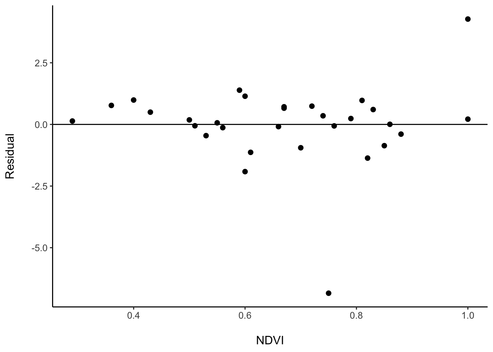

Session 3 Introduction to the tidyverse
3.1 What on earth is the tidyerse?
Broadly and briefly, the tidyverse is a collection of packages that are tailored to operating on data that are stored in what is called a “tidy” format. Such a format is one that is typical of the manner in which data are stored in relational data bases. (We will be talking more about “tidy” format throughout this session).
There is an R package called ‘tidyverse’ that is simply a wrapper that automatically loads the 8 core packages of the tidyverse. In this session we will talk specifically about functions in 5 of those packages, encountering them in this order:
- ‘readr’
- ‘tibble’
- ‘tidyr’
- ‘dplyr’
- ‘purrr’
The other core packages in the tidyverse are:
- ‘ggplot2’ — the well known graphics plotting package
- ‘stringr’ — a package for manipulating string data
- ‘forcats’ — a package to simplify the use of factors
These packages provide a unified way of handling data in a tidy format. And, it turns out, almost any data type can be stored and expressed in a tidy format. This means that 99% of your data analysis tasks can be tackled in a tidy fashion.
Some “big-data” data sets (like genome sequencing alignments, or doppler radar data, etc.) come in specialized data formats that allow for fast access and compression, and would not by amenable to storage in a tidy format. However, these are specialized cases, and for almost every data analysis application you will encounter, it behooves you to get comfortable in the tidyverse.
At any rate, to have access to all the functions from the 8 core packages of the ‘tidyverse’ we just load the package like this:
library(tidyverse)3.2 An example data set
We will start our exploration of the tidyverse with a data set
that is decidedly not tidy. It is a small data set of genotypes
of 34 fish from four different rivers with code names BALGA, BCHNC,
BEMME, and BMTMA. The fish have been genotyped
at 5 genetic markers, named mk1, mk2, mk3, mk4, and mk5.
Because these fish are diploids they have two copies of each
gene, and therefore, their genotype at a single markers
consists of the allele or allelic type of the two gene copies
at that marker. So, in this data set, for example, the mk1_1 column
holds information about the first gene copy at marker mk1 and,
mk1_2 holds information about the second gene copy at marker mk1.
Different alleles are specified as different positive integer
values, (like 228)
The data set is in the merida-workshop-2022 Rstudio project, stored as a CSV
file at data/tidy-intro/genotypes.csv. It looks like this:
river,indiv,mk1_1,mk1_2,mk2_1,mk2_2,mk3_1,mk3_2,mk4_1,mk4_2,mk5_1,mk5_2
BALGA,BALGA_001,311,311,228,228,234,234,184,164,211,211
BALGA,BALGA_002,311,225,228,228,230,226,184,184,NA,NA
BALGA,BALGA_006,311,311,228,228,234,234,184,168,219,215
BALGA,BALGA_007,311,311,228,220,230,218,184,164,215,215
BALGA,BALGA_008,311,311,228,228,234,230,168,164,NA,NA
BALGA,BALGA_009,315,315,220,220,238,230,184,184,231,207
BALGA,BALGA_012,311,311,228,220,230,230,184,164,227,211
BCHNC,BCHNC_001,311,311,228,228,234,230,184,184,227,211
BCHNC,BCHNC_002,311,259,228,228,238,226,184,184,227,215
BCHNC,BCHNC_003,311,311,228,212,238,226,NA,NA,227,227
BCHNC,BCHNC_004,NA,NA,NA,NA,NA,NA,NA,NA,207,207
BCHNC,BCHNC_005,311,299,232,228,234,234,184,184,219,203
BCHNC,BCHNC_006,NA,NA,228,228,NA,NA,168,168,215,215
BCHNC,BCHNC_007,315,311,228,228,234,234,168,168,215,211
BCHNC,BCHNC_008,NA,NA,228,228,NA,NA,168,168,231,219
BCHNC,BCHNC_009,349,311,236,228,234,214,184,168,219,219
BCHNC,BCHNC_010,311,311,232,228,238,230,184,168,219,215
BEMME,BEMME_001,311,311,228,228,238,226,184,184,NA,NA
BEMME,BEMME_002,349,299,232,220,246,234,184,168,211,203
BEMME,BEMME_003,311,311,236,228,238,234,184,168,NA,NA
BEMME,BEMME_006,311,311,236,228,238,234,184,168,NA,NA
BEMME,BEMME_008,349,349,228,228,234,230,184,184,215,211
BEMME,BEMME_009,311,311,228,220,238,238,184,184,235,203
BEMME,BEMME_010,311,311,228,228,242,234,168,168,223,203
BEMME,BEMME_011,307,307,228,228,238,234,184,168,231,215
BMTMA,BMTMA_001,NA,NA,228,220,234,234,196,168,223,211
BMTMA,BMTMA_003,311,311,228,228,234,230,208,196,223,219
BMTMA,BMTMA_005,311,253,228,228,242,230,NA,NA,211,203
BMTMA,BMTMA_006,311,311,228,228,234,226,196,184,223,211
BMTMA,BMTMA_007,NA,NA,228,220,234,230,196,184,223,223
BMTMA,BMTMA_008,311,311,228,228,242,238,196,188,223,223
BMTMA,BMTMA_009,NA,NA,228,228,234,230,200,184,223,219
BMTMA,BMTMA_010,311,311,232,232,230,230,196,184,223,211
BMTMA,BMTMA_011,NA,NA,228,228,NA,NA,184,168,223,2033.3 Reading data in the tidyverse
The package ‘readr’ has a large number of functions for reading in
data of different types. They all start with read_. These functions
typically read things into tidyverse-specific data frames that are
called “tibbles,” about which we will hear more later.
We can read the genotypes.csv file using the readr function,
read_csv().
Note: this looks like the base R function read.csv(), but it is not the
same!! Most notably,
read_csv()will never automatically convert strings to factors (Rejoice!)read_csv()is faster thanread.csv()read_csv()is more likely to tell you if there are unexpected irregularities found while reading your data set. It also has facilities to tell you exactly where those data-reading problems occurred.read_csv()will return data in a tibble rather than simply a data frame. (More about this soon!).
These characteristics are shared amongst all the read_*() functions
(such as read_tsv(), read_table(), read_table2() and
read_delim()) in the ‘readr’ package.
A delightful overview of the readr package can be found on the “readr Cheatsheet” from RStudio available here or by clicking the thumbnail below.

Reading the data set with read_csv() is simple:
genos <- read_csv("data/tidy-intro/genotypes.csv")And then we can display it like this:
genos## # A tibble: 34 × 12
## river indiv mk1_1 mk1_2 mk2_1 mk2_2 mk3_1 mk3_2
## <chr> <chr> <dbl> <dbl> <dbl> <dbl> <dbl> <dbl>
## 1 BALGA BALGA_001 311 311 228 228 234 234
## 2 BALGA BALGA_002 311 225 228 228 230 226
## 3 BALGA BALGA_006 311 311 228 228 234 234
## 4 BALGA BALGA_007 311 311 228 220 230 218
## 5 BALGA BALGA_008 311 311 228 228 234 230
## 6 BALGA BALGA_009 315 315 220 220 238 230
## 7 BALGA BALGA_012 311 311 228 220 230 230
## 8 BCHNC BCHNC_001 311 311 228 228 234 230
## 9 BCHNC BCHNC_002 311 259 228 228 238 226
## 10 BCHNC BCHNC_003 311 311 228 212 238 226
## # … with 24 more rows, and 4 more variables:
## # mk4_1 <dbl>, mk4_2 <dbl>, mk5_1 <dbl>, mk5_2 <dbl>Each row coresponds to one individual, and each column corresponds to one of the two gene copies at a genetic marker.
3.4 A word on tibbles
It is worth noting how it is that this tibble, this special type of a data frame is displayed when you print it:
- The first line,
# A tibble: 34 × 12, tells how many rows (34) and columns (12) are in the tibble. - By default, only the first ten rows are printed.
- Beneath the name of each column, the type of data in the column
is listed. In this case,
<dbl>means numeric data and<chr>means the column is a vector of character (string) data (i.e. text). Other possibilities are<int>for integer,<fct>for factor, and<list>for a column that is a list (Richard will talk more about that!) - If there are too many columns for the width of the screen, only the contents of the first few columns are printed. The remaining columns are just shown beneath by their names and types.
- If there a a very large number of columns, the names and types of some of the remaining ones are not shown.
In this way, you can quickly get a sense for how a data set is structured by simply printing it to the screen without running the risk of bombing your whole R console by having it print all the lines of a very large data frame!
While the readr package always returns a tibble, the as_tibble()
function from the ‘tibble’ package provides an easy way to turn
an existing data frame into a tibble. For example, to witness
how much easier it is to see what is contained in the built-in
R data set, iris, by converting it into a tibble, the reader
is invited to evaluate the following two lines in their
R console and compare the output:
iris # the whole data set gets spit out and you end up at bottom of it
as_tibble(iris) # a nice tibble summary gets printedFinally, the ‘tibble’ package provides the function tibble() that
allows the user to create a tibble from vectors. It is much like
the built-in R function, data.frame() except that it deals appropriately
with list vectors.
For more about tibbles, the best place if you are new is the tibble chapter, in the R For Data Science book.
3.5 Back to “tidying” up our genotype data
Our small data set genos might seem pretty neat and tidy—it is easy
to look at as a human, and it would not take a whole lot of space to
print it out on a page. However, in the current format, doing
a number of summaries of the data would require somewhat specialized
code.
For example, if you wanted to count up the number of occurrences of each
allelic type (i.e. each number, like 311) at each of the markers, within
each of the rivers, it would not be straightforward! Just imagine
counting alleles at markers mk_1: the alleles are in two different
columns, and you would have to account for fish being from different rivers.
While one could certainly write base R code to traverse the data frame and pick out the appropriate columns and rows to make these summaries, the tidyverse approach is to recognize that converting the data to a different format (often called a “long” format), will make it easier to do most any operation on the data.
The main problem of the current data set, genos, is that
the observed values at all the markers are the same—they are all
just different alleles; however, they occupy lots of different columns.
A general principle in tidying data is to strive for having only a single
column to represent a certain type of observation.
In the case of genos,
the column headers mk1_1, mk1_2, ... , mk_5_2 tell us which particular
markers and gene copies have a particular allelic type. But another way
to represent that is to have a column that gives the marker and the gene copy.
Perhaps it is best to simply show what a tidy, long version of these data
look like. The core tidyverse package ‘tidyr’ provides many functions for
tidying data sets. We will use the pivot_longer() function to turn
the column names into data values in new columns:
genos_long <- genos %>%
pivot_longer(
cols = c(mk1_1:mk5_2),
names_to = c("marker", "gene_copy"),
names_sep = "_",
values_to = "allele"
)
genos_long## # A tibble: 340 × 5
## river indiv marker gene_copy allele
## <chr> <chr> <chr> <chr> <dbl>
## 1 BALGA BALGA_001 mk1 1 311
## 2 BALGA BALGA_001 mk1 2 311
## 3 BALGA BALGA_001 mk2 1 228
## 4 BALGA BALGA_001 mk2 2 228
## 5 BALGA BALGA_001 mk3 1 234
## 6 BALGA BALGA_001 mk3 2 234
## 7 BALGA BALGA_001 mk4 1 184
## 8 BALGA BALGA_001 mk4 2 164
## 9 BALGA BALGA_001 mk5 1 211
## 10 BALGA BALGA_001 mk5 2 211
## # … with 330 more rowsWow, that is a wildly different format! We now only have 5 columns:
river: tells us what river the fish is fromindiv: the ID of the individual fishmarker: the name of the marker (i.e.mk_1, ormk_2, etc.)gene_copy: whether we are looking at the first (1) or the second (2) gene copy of the fish.allele: the allelic type of the gene_copy at the marker in the individual fish from the particular river.
Though our data set has only 5 columns, it now has 340 rows. As a consequence, it is not really possible to “look at” a large portion of the data set as a human (as was possible before).
Furthermore, if you don’t know how to handle data like these it can seem daunting. But, once you learn the tools of the tidyverse (and particularly of the package ‘dplyr’) this format lets you learn the same, simple approach that will work for many, many different data sets.
The ‘tidyr’ package has a number of functions for tidying data. Check out the RStudio tidyr cheatsheet for a great overview of ‘tidyr’ features.

3.6 What the heck is that %>% thingie?!
Before we proceed, we want to make sure that everyone understands
what the %>% in the above code block is doing.
The packages of the tidyverse all import the R symbol %>% from the
‘magrittr’ package. This is referred to as the tidyverse “pipe” because
it allows the user to “pipe” the output of one function into the input
for another function (in the same way that experience Unix computer users
will “pipe” output from one command into the input for another command).
In short, the %>% symbol takes whatever is on the
left of it and it supplies that as the first argument of the function
that is to the right of it. The thing on the left can be an R object or
the output of a functio.
For a simple, contrived example, suppose you wanted to add the integers from 1 to 10, take the square root of the result, and then calculate the sin of that result, and then take the log of it. Without piping capability, you could write that operation in a horribly nested set of parentheses:
log(sin(sqrt(sum(1:10))))## [1] -0.09905which is hard to read because the direction of operations runs right to left. It is much easier to read and understand what is going on by piping results from one function to the next:
1:10 %>%
sum() %>%
sqrt() %>%
sin() %>%
log()## [1] -0.09905Operating upon tibbles with the pipe let’s you chain multiple different functions/operations upon the data in an easy-to-read fashion. And, it let’s you check intermediate results along the way as you build up more complex expressions. It is a crucial capability in the tidyverse.
We will see the tidyverse pipe used extensively in the following.
3.7 The ‘dplyr’ package: the heart of the tidyverse
‘dplyr’ is the tidyverse package that offers the most functionality for operating on data sets. The main ‘dplyr’ functions for performing actions on a tibble are described as “verbs”: and their names are meant to describe the actions they do.
There are a lot of other functions within ‘dplyr.’ We can’t cover them all here, but, once again, the RStudio dplyr cheatsheet is the perfect place for an overview.

Here, we will cover just the main verbs, namely:
select(),filter(),arrange()change the extent of columns, or rows, or the sort order of rows, respectively.mutate()allows for the creation of new columns that are functions of existing columns (and have the same length as the existing columns).summarise()allows for summarising existing columns down to a single value.group_by()allows the ‘dplyr’ verbs to operate on multiple subsets of data defined by the values of grouping variables. I dare say this is the most important concept in all the tidyverse.left_join()the simplest of a whole family of joins (left_join(),full_join(),inner_join(), etc.), that combine rows of two tibbles together according to shared values in certain columns.
3.7.1 Non-standard Evaluation (NSE): You don’t wrap column names in quotation marks
Importantly, in the tidyverse, when you operate on a column of a tibble, it is customary to refer to that column by its name, rather than by the number that describes its position (this makes the code more resilient to things like ordering of columns in a tibble). Within the tidyverse, names of columns are given as if they were variable names—they should almost never be wrapped in quotation marks.
3.7.2 select() to select columns of a tibble
The select function is used to choose which columns of a tibble are returned. They get returned in a tibble of their own. Examples:
# return a tibble with just the river and indiv of
# the original genos tibble
genos %>%
select(river, indiv)## # A tibble: 34 × 2
## river indiv
## <chr> <chr>
## 1 BALGA BALGA_001
## 2 BALGA BALGA_002
## 3 BALGA BALGA_006
## 4 BALGA BALGA_007
## 5 BALGA BALGA_008
## 6 BALGA BALGA_009
## 7 BALGA BALGA_012
## 8 BCHNC BCHNC_001
## 9 BCHNC BCHNC_002
## 10 BCHNC BCHNC_003
## # … with 24 more rowsRanges of columns can be selected by putting a colon between the name of the column at the start of the range and the name of the column at the end of the range.
Furthermore, adding a - to a column name in select() will remove
it. And adding a - before a column name range (surrounded by parentheses) will
remove all those columns. For example:
# remove the columns mk1_1 to mk3_2 from the original
# genos tibble
genos %>%
select(-(mk1_1:mk3_2))## # A tibble: 34 × 6
## river indiv mk4_1 mk4_2 mk5_1 mk5_2
## <chr> <chr> <dbl> <dbl> <dbl> <dbl>
## 1 BALGA BALGA_001 184 164 211 211
## 2 BALGA BALGA_002 184 184 NA NA
## 3 BALGA BALGA_006 184 168 219 215
## 4 BALGA BALGA_007 184 164 215 215
## 5 BALGA BALGA_008 168 164 NA NA
## 6 BALGA BALGA_009 184 184 231 207
## 7 BALGA BALGA_012 184 164 227 211
## 8 BCHNC BCHNC_001 184 184 227 211
## 9 BCHNC BCHNC_002 184 184 227 215
## 10 BCHNC BCHNC_003 NA NA 227 227
## # … with 24 more rows3.7.3 filter() to retain certain rows
The filter() function takes any vectorized logical expression involving
columns of the tibble. Rows for which that expression evaluate to TRUE
are retained, and those that evaluate to FALSE are not.
Examples:
# only keep rows with river code "BALGA"
genos_long %>%
filter(river == "BALGA")## # A tibble: 70 × 5
## river indiv marker gene_copy allele
## <chr> <chr> <chr> <chr> <dbl>
## 1 BALGA BALGA_001 mk1 1 311
## 2 BALGA BALGA_001 mk1 2 311
## 3 BALGA BALGA_001 mk2 1 228
## 4 BALGA BALGA_001 mk2 2 228
## 5 BALGA BALGA_001 mk3 1 234
## 6 BALGA BALGA_001 mk3 2 234
## 7 BALGA BALGA_001 mk4 1 184
## 8 BALGA BALGA_001 mk4 2 164
## 9 BALGA BALGA_001 mk5 1 211
## 10 BALGA BALGA_001 mk5 2 211
## # … with 60 more rows# only keep data from markers mk3 and mk4
genos_long %>%
filter(marker %in% c("mk3", "mk4"))## # A tibble: 136 × 5
## river indiv marker gene_copy allele
## <chr> <chr> <chr> <chr> <dbl>
## 1 BALGA BALGA_001 mk3 1 234
## 2 BALGA BALGA_001 mk3 2 234
## 3 BALGA BALGA_001 mk4 1 184
## 4 BALGA BALGA_001 mk4 2 164
## 5 BALGA BALGA_002 mk3 1 230
## 6 BALGA BALGA_002 mk3 2 226
## 7 BALGA BALGA_002 mk4 1 184
## 8 BALGA BALGA_002 mk4 2 184
## 9 BALGA BALGA_006 mk3 1 234
## 10 BALGA BALGA_006 mk3 2 234
## # … with 126 more rows# remove rows for which allele is NA
genos_long %>%
filter(!is.na(allele))## # A tibble: 300 × 5
## river indiv marker gene_copy allele
## <chr> <chr> <chr> <chr> <dbl>
## 1 BALGA BALGA_001 mk1 1 311
## 2 BALGA BALGA_001 mk1 2 311
## 3 BALGA BALGA_001 mk2 1 228
## 4 BALGA BALGA_001 mk2 2 228
## 5 BALGA BALGA_001 mk3 1 234
## 6 BALGA BALGA_001 mk3 2 234
## 7 BALGA BALGA_001 mk4 1 184
## 8 BALGA BALGA_001 mk4 2 164
## 9 BALGA BALGA_001 mk5 1 211
## 10 BALGA BALGA_001 mk5 2 211
## # … with 290 more rows3.7.4 arrange() to reorder the rows of the tibble
For example, perhaps you wish to see which of the alleles have the highest numbers. Then:
genos_long %>%
arrange(desc(allele))## # A tibble: 340 × 5
## river indiv marker gene_copy allele
## <chr> <chr> <chr> <chr> <dbl>
## 1 BCHNC BCHNC_009 mk1 1 349
## 2 BEMME BEMME_002 mk1 1 349
## 3 BEMME BEMME_008 mk1 1 349
## 4 BEMME BEMME_008 mk1 2 349
## 5 BALGA BALGA_009 mk1 1 315
## 6 BALGA BALGA_009 mk1 2 315
## 7 BCHNC BCHNC_007 mk1 1 315
## 8 BALGA BALGA_001 mk1 1 311
## 9 BALGA BALGA_001 mk1 2 311
## 10 BALGA BALGA_002 mk1 1 311
## # … with 330 more rowsThe ‘dplyr’ function desc() means: arrange rows in descending order of
the variable named within it.
You can arrange/sort rows according to multiple columns, as well. For example to sort things that show individual genotypes in adjacent rows, but with rivers in reverse alphabetical order, we could do:
genos_long %>%
arrange(desc(river), indiv, marker, gene_copy)## # A tibble: 340 × 5
## river indiv marker gene_copy allele
## <chr> <chr> <chr> <chr> <dbl>
## 1 BMTMA BMTMA_001 mk1 1 NA
## 2 BMTMA BMTMA_001 mk1 2 NA
## 3 BMTMA BMTMA_001 mk2 1 228
## 4 BMTMA BMTMA_001 mk2 2 220
## 5 BMTMA BMTMA_001 mk3 1 234
## 6 BMTMA BMTMA_001 mk3 2 234
## 7 BMTMA BMTMA_001 mk4 1 196
## 8 BMTMA BMTMA_001 mk4 2 168
## 9 BMTMA BMTMA_001 mk5 1 223
## 10 BMTMA BMTMA_001 mk5 2 211
## # … with 330 more rows3.7.5 mutate() to create new columns
With the mutate() function, it is easy to create a new
column that is a function of other columns. The syntax is like:
# create a new column named new_column that is a function
# or existing columns col1, col2
genos_long %>%
mutate(new_column_name = some_function(col1, col2))In this capacity, ‘dplyr’ is very particular:
- If the function returns the same number of rows as the tibble, it works.
- If the function returns a single value, that single value is replicated in each row of the new column.
- Otherwise,
mutate()throws an error.
Simple examples. Try these on your own:
# make a column, "long_marker_names" that give
# a long name in the form "Marker X" for each marker
genos_long %>%
mutate(long_marker_names = str_replace(marker, "mk", "Marker "))
# make a new column called gc_ab that gives the gene copies
# as "a" and "b", rather than "1" and "2"
genos_long %>%
mutate(
gc_ab = case_when(
gene_copy == 1 ~ "a",
gene_copy == 2 ~ "b",
TRUE ~ NA_character_
)
)
# make a new column called season that tells us that
# all of these data were collected in the "Autumn"
genos_long %>%
mutate(season = "Autumn")3.7.6 Compute a single value from many rows: summarise()
While mutate() always returns a new column that is the same length
as all the other columns in the tibble, summarise() does something
quite different: it allows you to make a column that will have only
a single row in it. We will see more examples later on, but for now,
consider one of the simplest ways to summarise a tibble: count
how many rows are in it. That is done with the ‘dplyr’ function
n():
genos_long %>%
summarise(num_rows = n())## # A tibble: 1 × 1
## num_rows
## <int>
## 1 340See how that summarise() function takes an entire tibble, and returns
a single value (the number of rows of the original tibble).
This behavior might not seem all that useful, but as we will see, when combined with grouping it is extraordinarily useful.
3.7.7 group_by() to operate tidily on subsets of a tibble
One of the most important aspects of working with tibbles is that of grouping them by variables. In fact, without grouping the “tidy” or “long” format would be nearly impossible to deal with; however with grouping, a huge number of problems can be solved upon tidy data within the tidyverse.
Much of the time, we want to apply functions to separate parts of the
data set, each part in turn. An example might help: suppose that
we want to compute the allele frequencies from genos_long. In other words,
we want to count how many times within each river, each allele, at each locus is observed.
Each time we say something like at each locus, or within each river, we are implicitly talking about grouping our data. Thus, if we “group our data by river,” we are conceptually, breaking our data set into four distinct tibbles:
- one with all the rows in which
river == "BALGA" - one with all the rows in which
river == "BCHNC" - one with all the rows in which
river == "BEMME" - one with all the rows in which
river == "BMTMA"
Then (and this is the really important part!) if we
pass such a “grouped” tibble to mutate() or summarise(),
then those functions will operate on each of those four separate
groups, independently, but it will still return the result
as a single tibble.
To group a tibble, we use the group_by() function. Here we
group genos_long by river:
genos_long %>%
group_by(river)## # A tibble: 340 × 5
## # Groups: river [4]
## river indiv marker gene_copy allele
## <chr> <chr> <chr> <chr> <dbl>
## 1 BALGA BALGA_001 mk1 1 311
## 2 BALGA BALGA_001 mk1 2 311
## 3 BALGA BALGA_001 mk2 1 228
## 4 BALGA BALGA_001 mk2 2 228
## 5 BALGA BALGA_001 mk3 1 234
## 6 BALGA BALGA_001 mk3 2 234
## 7 BALGA BALGA_001 mk4 1 184
## 8 BALGA BALGA_001 mk4 2 164
## 9 BALGA BALGA_001 mk5 1 211
## 10 BALGA BALGA_001 mk5 2 211
## # … with 330 more rowsFrom the output that gets printed out, it looks like almost nothing has changed about the tibble, except there is this extra line:
# Groups: river [4]This tells us that after running genos_long through group_by(river),
the result is a tibble that is grouped by the river column, and there
are 4 groups.
But, now, if we count the number of rows in each of those groups we start to see how powerful this approach can be:
genos_long %>%
group_by(river) %>%
summarise(num_rows = n())## # A tibble: 4 × 2
## river num_rows
## <chr> <int>
## 1 BALGA 70
## 2 BCHNC 100
## 3 BEMME 80
## 4 BMTMA 90OK! That is telling us about the sizes of those 4 groups, and we can conceptually think of each group as being a “sub-tibble” with the number of rows as listed above.
Note that you can group tibbles by more than one column. When grouped on multiple columns, the groups are formed from all the observed combinations of values in the different columns. For example:
genos_long %>%
group_by(river, marker, allele)## # A tibble: 340 × 5
## # Groups: river, marker, allele [93]
## river indiv marker gene_copy allele
## <chr> <chr> <chr> <chr> <dbl>
## 1 BALGA BALGA_001 mk1 1 311
## 2 BALGA BALGA_001 mk1 2 311
## 3 BALGA BALGA_001 mk2 1 228
## 4 BALGA BALGA_001 mk2 2 228
## 5 BALGA BALGA_001 mk3 1 234
## 6 BALGA BALGA_001 mk3 2 234
## 7 BALGA BALGA_001 mk4 1 184
## 8 BALGA BALGA_001 mk4 2 164
## 9 BALGA BALGA_001 mk5 1 211
## 10 BALGA BALGA_001 mk5 2 211
## # … with 330 more rowsapparently groups the data into 93 different groups.
Now, we are ready to try computing allele frequencies (i.e. counting alleles) at different markers. Remember, we want to count how many times within each river and at each locus that each allele is observed. (Note we also don’t want to count missing data for this so we can filter it out in the beginning). Hence:
genos_long %>%
filter(!is.na(allele)) %>%
group_by(river, marker, allele) %>%
summarise(num_alleles = n())## `summarise()` has grouped output by 'river', 'marker'. You can override using the `.groups` argument.## # A tibble: 84 × 4
## # Groups: river, marker [20]
## river marker allele num_alleles
## <chr> <chr> <dbl> <int>
## 1 BALGA mk1 225 1
## 2 BALGA mk1 311 11
## 3 BALGA mk1 315 2
## 4 BALGA mk2 220 4
## 5 BALGA mk2 228 10
## 6 BALGA mk3 218 1
## 7 BALGA mk3 226 1
## 8 BALGA mk3 230 6
## 9 BALGA mk3 234 5
## 10 BALGA mk3 238 1
## # … with 74 more rowsWow! That is fast and easy.
It is relatively straightforward to think about how summarise() works on grouped tibbles, but
it is just as important to know that mutate() also operates on the separate groups of a
grouped tibble.
Note, that the result above has the notation:
# Groups: river, marker [20]So, the result is still a grouped tibble, but in this case it is grouped by
river, marker. We had originally grouped it by river, marker, allele, BUT
by default, the summarise() function will return a tibble in which the last
grouping variable (in this case allele) is no longer in effect.
In our case, this is convenient, because such a grouping is good for computing relative frequencies of the alleles. We can just add that on to the chain with the pipe. (And while we are at it, sort things by allele frequency.)
genos_long %>%
filter(!is.na(allele)) %>%
group_by(river, marker, allele) %>%
summarise(num_alleles = n()) %>%
mutate(freq = num_alleles / sum(num_alleles)) %>%
ungroup() %>%
arrange(river, marker, desc(freq))## `summarise()` has grouped output by 'river', 'marker'. You can override using the `.groups` argument.## # A tibble: 84 × 5
## river marker allele num_alleles freq
## <chr> <chr> <dbl> <int> <dbl>
## 1 BALGA mk1 311 11 0.786
## 2 BALGA mk1 315 2 0.143
## 3 BALGA mk1 225 1 0.0714
## 4 BALGA mk2 228 10 0.714
## 5 BALGA mk2 220 4 0.286
## 6 BALGA mk3 230 6 0.429
## 7 BALGA mk3 234 5 0.357
## 8 BALGA mk3 218 1 0.0714
## 9 BALGA mk3 226 1 0.0714
## 10 BALGA mk3 238 1 0.0714
## # … with 74 more rowsA few things are worth noting:
sum(num_allele)sums the number of alleles in each river at each marker (because that is how the tibble is grouped). Hence,num_allele / sum(num_allele)gives the relative frequency of each allele (in the river at the marker).ungroup()removes any grouping criteria from a tibble. It is handy if you don’t want to have any groups in your tibble any longer.- The arrange function lets us sort the rows in a useful fashion.
3.7.7.1 Exercises for you
The reason that the tidy format is wonderful is because you can get a number of different results by following the same principles, but grouping things differently.
Try using the tools of ‘dplyr’ to compute the following.
A skeleton has been provided. Put the missing code into the ... in each.
- A tibble with the relative frequency of missing data within each river
genos_long %>%
group_by(...) %>%
summarise(fract_miss = sum(is.na(allele) / n())- A tibble with the relative frequency of missing data at each marker
genos_long %>%
group_by(...) %>%
summarise(fract_miss = ...)3.7.8 Joins
Joins are what you use to add columns from one tibble to another tibble by matching the values in one or more shared columns.
We will just show the simplest join, the left_join().
Suppose that we have data about each fish, that tells us:
- whether they were caught in the autumn or the spring
- whether they were a juvenile or an adult
- the length in centimeters.
We have an example of such a data set that we can read in:
fish_meta <- read_csv("data/tidy-intro/fish-metadata.csv")
fish_meta## # A tibble: 1,252 × 4
## indiv season stage length
## <chr> <chr> <chr> <dbl>
## 1 BEMME_001 autumn juvenile 12.9
## 2 BEMME_002 spring juvenile 6.7
## 3 BEMME_003 spring adult 23
## 4 BEMME_004 autumn adult 25.5
## 5 BEMME_005 autumn juvenile 10
## 6 BEMME_006 spring juvenile 11.3
## 7 BEMME_008 spring juvenile 10
## 8 BEMME_009 spring juvenile 10.2
## 9 BEMME_010 autumn juvenile 9.3
## 10 BEMME_011 spring adult 21
## # … with 1,242 more rowsOK! This has season, stage, and length for 1,252 fish. That is a lot more
than the 34 fish we have genotype data for. So, how can we pick out the relevant
rows from fish_meta to join them on to the columns of genos_long? We use
left_join().
Note that in both genos_long and in fish_meta, the individual ID is
in the column indiv. This means that we can join the two tibbles
by the indiv column in each tibble. Thus:
genos_long2 <- genos_long %>%
left_join(fish_meta, by = "indiv")
genos_long2## # A tibble: 340 × 8
## river indiv marker gene_copy allele season stage
## <chr> <chr> <chr> <chr> <dbl> <chr> <chr>
## 1 BALGA BALGA_001 mk1 1 311 spring juve…
## 2 BALGA BALGA_001 mk1 2 311 spring juve…
## 3 BALGA BALGA_001 mk2 1 228 spring juve…
## 4 BALGA BALGA_001 mk2 2 228 spring juve…
## 5 BALGA BALGA_001 mk3 1 234 spring juve…
## 6 BALGA BALGA_001 mk3 2 234 spring juve…
## 7 BALGA BALGA_001 mk4 1 184 spring juve…
## 8 BALGA BALGA_001 mk4 2 164 spring juve…
## 9 BALGA BALGA_001 mk5 1 211 spring juve…
## 10 BALGA BALGA_001 mk5 2 211 spring juve…
## # … with 330 more rows, and 1 more variable:
## # length <dbl>Now, you could do all sorts of things like explore allele frequency differences in different seasons or from different life stages.
3.7.9 Wrap Up
We have just scratched the surface of what is possible with the tidyverse.
One thing we haven’t mentioned much is that the columns of a tibble can, themselves,
be list-vectors. This can be very powerful when doing statistical modeling, as the
outputs of different models can be stored in lists that are themselves columns of
tibbles. Manipulating such lists is done with the purrr package, which is part of
the tidyverse.
Richard will give us an example of that for the rest of the session.
3.8 Modeling within the Tidyverse
Load required packages
library(viridis) # preferred color palette for graphing ## Loading required package: viridisLiteImport bird data.
The data provides information on the species richness of birds and butterflies and NDVI at 30 sites. Our goal is to run a linear model that estimates the magnitude, direction, and uncertainty in the species richness-NDVI relationship for each taxa and then visualize the relationship.
data_all <- read_csv("data/data.richard.new.csv")## New names:
## * `` -> ...1## Rows: 60 Columns: 5## ── Column specification ───────────────────────────────
## Delimiter: ","
## chr (2): Site, Taxa
## dbl (3): ...1, NDVI, Richness##
## ℹ Use `spec()` to retrieve the full column specification for this data.
## ℹ Specify the column types or set `show_col_types = FALSE` to quiet this message.data_all## # A tibble: 60 × 5
## ...1 Site NDVI Taxa Richness
## <dbl> <chr> <dbl> <chr> <dbl>
## 1 1 Site.1 0.66 Birds 14
## 2 2 Site.2 0.4 Birds 10
## 3 3 Site.3 0.36 Birds 9
## 4 4 Site.4 0.82 Birds 16
## 5 5 Site.5 0.55 Birds 12
## 6 6 Site.6 0.29 Birds 7
## 7 7 Site.7 0.51 Birds 11
## 8 8 Site.8 0.74 Birds 16
## 9 9 Site.9 1 Birds 25
## 10 10 Site.10 0.76 Birds 16
## # … with 50 more rowsThe old way is to run a model on each taxa separately:
# subset the Birds data
model_birds <- lm(Richness ~ NDVI, data = data_all[data_all$Taxa == "Birds", ])
# subset the Butterflies
model_butterflies <- lm(Richness ~ NDVI, data = data_all[data_all$Taxa == "Butterflies", ]) Extracting results from the summary file is not easy.
# You have to remember that subscript [[4]] corresponds to the main results
key_results_birds <- as.data.frame(summary(model_birds)[[4]]) The broom package presents model results in a tidy way.
library(broom)broom::tidy() returns parameter estimates.
birds_tidy <- model_birds %>%
tidy()
birds_tidy## # A tibble: 2 × 5
## term estimate std.error statistic p.value
## <chr> <dbl> <dbl> <dbl> <dbl>
## 1 (Intercept) 0.952 1.22 0.780 4.42e- 1
## 2 NDVI 19.9 1.77 11.2 6.75e-12broom::glance() includes R2, AIC, and more.
birds_glance <- model_birds %>%
glance()
birds_glance## # A tibble: 1 × 12
## r.squared adj.r.squared sigma statistic p.value
## <dbl> <dbl> <dbl> <dbl> <dbl>
## 1 0.819 0.812 1.70 127. 6.75e-12
## # … with 7 more variables: df <dbl>, logLik <dbl>,
## # AIC <dbl>, BIC <dbl>, deviance <dbl>,
## # df.residual <int>, nobs <int>broom::augment() returns fitted values
birds_augment <- model_birds %>%
augment()
birds_augment## # A tibble: 30 × 8
## Richness NDVI .fitted .resid .hat .sigma .cooksd
## <dbl> <dbl> <dbl> <dbl> <dbl> <dbl> <dbl>
## 1 14 0.66 14.1 -0.0743 0.0334 1.73 3.41e-5
## 2 10 0.4 8.91 1.09 0.111 1.72 2.90e-2
## 3 9 0.36 8.11 0.890 0.136 1.72 2.49e-2
## 4 16 0.82 17.3 -1.26 0.0583 1.71 1.79e-2
## 5 12 0.55 11.9 0.113 0.0484 1.73 1.17e-4
## 6 7 0.29 6.72 0.282 0.188 1.73 3.90e-3
## 7 11 0.51 11.1 -0.0920 0.0603 1.73 9.98e-5
## 8 16 0.74 15.7 0.335 0.0389 1.73 8.18e-4
## 9 25 1 20.8 4.17 0.152 1.50 6.35e-1
## 10 16 0.76 16.1 -0.0625 0.0425 1.73 3.12e-5
## # … with 20 more rows, and 1 more variable:
## # .std.resid <dbl>To run models or implement any function on the different groups within a data frame, one must master tidyr::nest() and purrr::map().
nest() creates a list of data frames with each corresponding to a different group.
Example: create a data frame for each taxa.
data_taxa <- data_all %>%
group_by(Taxa) %>%
nest()
data_taxa## # A tibble: 2 × 2
## # Groups: Taxa [2]
## Taxa data
## <chr> <list>
## 1 Birds <tibble [30 × 4]>
## 2 Butterflies <tibble [30 × 4]>The grouping variable is left out of the nested data frame. All other data is now in a separate data frame, nested with the whole data frame.
You can inspect what lies behind the “data” column by using unnest() to display the original data.
data_original_birds <- data_taxa %>%
ungroup() %>%
slice(n = 1) %>%
unnest(data)
# slice(n = 1) means extract the first row of the data_taxa data frame
data_original_birds## # A tibble: 30 × 5
## Taxa ...1 Site NDVI Richness
## <chr> <dbl> <chr> <dbl> <dbl>
## 1 Birds 1 Site.1 0.66 14
## 2 Birds 2 Site.2 0.4 10
## 3 Birds 3 Site.3 0.36 9
## 4 Birds 4 Site.4 0.82 16
## 5 Birds 5 Site.5 0.55 12
## 6 Birds 6 Site.6 0.29 7
## 7 Birds 7 Site.7 0.51 11
## 8 Birds 8 Site.8 0.74 16
## 9 Birds 9 Site.9 1 25
## 10 Birds 10 Site.10 0.76 16
## # … with 20 more rowsmap() applies a function to each nested data frame.
Example: find the mean number of species of each taxa
mean_taxa <- data_all %>%
group_by(Taxa) %>%
nest() %>%
mutate(mean_richness = map(data, function(x) {
mean(x %>%
pull(Richness))
}
))
# map indicates the data frame column with the nested data (i.e., data) and applies a function to that data.
# data becomes the "x" in the function.
# pull() extracts the variable of interest and returns a vector.
mean_taxa## # A tibble: 2 × 3
## # Groups: Taxa [2]
## Taxa data mean_richness
## <chr> <list> <list>
## 1 Birds <tibble [30 × 4]> <dbl [1]>
## 2 Butterflies <tibble [30 × 4]> <dbl [1]>The results are mutated as another list column in the original data frame. They can be unnested.
mean_taxa <- data_all %>%
group_by(Taxa) %>%
nest() %>%
mutate(mean_richness = map(data, function(x) {
mean(x %>%
pull(Richness))
}
)) %>%
unnest(mean_richness)
mean_taxa## # A tibble: 2 × 3
## # Groups: Taxa [2]
## Taxa data mean_richness
## <chr> <list> <dbl>
## 1 Birds <tibble [30 × 4]> 14.2
## 2 Butterflies <tibble [30 × 4]> 10.7More complicated functions are easier to specify outside of the pipe.
Example: find the sites with the highest and lowest bird and butterfly species richness
# Each element of the list column data will correspond to data frame "x" in the function.
get_sites <- function(x) {
x %>%
filter(Richness %in% c(max(Richness), min(Richness))) %>%
mutate(Type = ifelse(Richness == max(Richness), "High", "Low")) %>%
arrange(desc(Richness))
}
# The function get.sites is applied to each element in the list column data.
sites_taxa <- data_all %>%
group_by(Taxa) %>%
nest() %>%
mutate(Types = map(data, get_sites)) %>%
unnest(Types) %>%
select(-data)
sites_taxa## # A tibble: 4 × 6
## # Groups: Taxa [2]
## Taxa ...1 Site NDVI Richness Type
## <chr> <dbl> <chr> <dbl> <dbl> <chr>
## 1 Birds 9 Site.9 1 25 High
## 2 Birds 6 Site.6 0.29 7 Low
## 3 Butterflies 48 Site.18 0.81 20 High
## 4 Butterflies 32 Site.2 0.4 6 LowAnother example, this time nesting the data based on sites and finding whether a site has more bird or butterfly species.
get_taxa <- function(x) {
Top_taxa<- x %>%
filter(Richness == max(Richness)) %>%
pull(Taxa)
# Need to indicate sites where birds and butterflies have the same species richness
if(length(Top_taxa) > 1) {
paste(Top_taxa[1], Top_taxa[2], sep = " + ")
} else {
Top_taxa
}
}
sites_richness <- data_all %>%
group_by(Site) %>%
nest() %>%
mutate(Animal = map(data, get_taxa)) %>%
unnest(Animal) %>%
select(-data)
sites_richness## # A tibble: 30 × 2
## # Groups: Site [30]
## Site Animal
## <chr> <chr>
## 1 Site.1 Birds
## 2 Site.2 Birds
## 3 Site.3 Birds
## 4 Site.4 Birds
## 5 Site.5 Birds
## 6 Site.6 Butterflies
## 7 Site.7 Birds
## 8 Site.8 Birds
## 9 Site.9 Birds
## 10 Site.10 Birds
## # … with 20 more rowsAre there any sites where birds and butterflies have equal species richness?
site_animals <- sites_richness %>%
filter(Animal == "Birds + Butterflies")
site_animals## # A tibble: 1 × 2
## # Groups: Site [1]
## Site Animal
## <chr> <chr>
## 1 Site.25 Birds + ButterfliesAre there more sites with higher bird or butterfly species richness?
richness_summary <- sites_richness %>%
group_by(Animal) %>%
summarize(No_Sites = n())
richness_summary## # A tibble: 3 × 2
## Animal No_Sites
## <chr> <int>
## 1 Birds 26
## 2 Birds + Butterflies 1
## 3 Butterflies 3Run a linear model to estimate the relationship between NDVI and richness for each taxa. “lm” can be specified as a function in map(). The model is mutated as a list column. We can mutate all model results by mapping tidy, glance, and augument onto each model.
richness_models <- data_all %>%
group_by(Taxa) %>%
nest() %>%
mutate(Models = map(data, ~lm(Richness ~ NDVI, data = .))) %>%
mutate(Tidied = map(Models, tidy),
Glanced = map(Models, glance),
Augmented = map(Models, augment))
richness_models## # A tibble: 2 × 6
## # Groups: Taxa [2]
## Taxa data Models Tidied Glanced Augmented
## <chr> <list> <list> <list> <list> <list>
## 1 Birds <tibbl… <lm> <tibbl… <tibble… <tibble …
## 2 Butterflies <tibbl… <lm> <tibbl… <tibble… <tibble …Is NDVI more strongly associated with bird or butterfly species richness? Let’s compare the parameter estimates and their precision, which can be returned as a 95% confidence interval by specifying conf.int=TRUE and conf.level=0.95 (the default).
richness_models <- data_all %>%
group_by(Taxa) %>%
nest() %>%
mutate(Models = map(data, ~lm(Richness ~ NDVI, data = .))) %>%
mutate(Tidied = map(Models, tidy, conf.int = TRUE, conf.level = 0.95),
Glanced = map(Models, glance),
Augmented = map(Models, augment)) %>%
unnest(Tidied)
parameter_estimates <- richness_models %>%
select(Taxa, term, estimate, conf.low, conf.high) %>%
filter(term == "NDVI")
parameter_estimates## # A tibble: 2 × 5
## # Groups: Taxa [2]
## Taxa term estimate conf.low conf.high
## <chr> <chr> <dbl> <dbl> <dbl>
## 1 Birds NDVI 19.9 16.3 23.5
## 2 Butterflies NDVI 12.7 8.91 16.4Graph the results: compare the relationship with NDVI for both species. Rather than use the fitted values, predict richness for all NDVI values from 0 to 1 at intervals of 0.01. The precision of the prediction can be estimated as confidence intervals (interval=“confidence”) or prediction intervals (interval=“prediction”)
richness_models <- data_all %>%
group_by(Taxa) %>%
nest() %>%
mutate(Models = map(data, ~lm(Richness ~ NDVI, data = .))) %>%
mutate(Tidied = map(Models, tidy),
Glanced = map(Models, glance),
Predictions = map(Models, augment, newdata = tibble(NDVI = seq(0, 1, 0.01)),
se_fit = TRUE, interval = "confidence"))
# Rather than use the original NDVI values for prediction,
# specify a new data frame (newdata) with the NDVI values of interest
richness_predictions <- richness_models %>%
unnest(Predictions) %>%
select(Taxa, NDVI, .fitted, .lower, .upper) %>%
rename(Richness = .fitted, low.95 = .lower, high.95 = .upper)
p <- richness_predictions %>%
ggplot(aes(x = NDVI, y = Richness, col = Taxa)) +
geom_line(size = 2) +
# Visualize confidence interval
geom_ribbon(aes(ymin = low.95, ymax = high.95, fill = Taxa), show.legend = FALSE,
color = NA, alpha = 0.3) +
# Add original data
geom_point(data = data_all, aes(x = NDVI, y = Richness, col = Taxa), size = 3) +
scale_y_continuous(name = "Species richness\n") +
scale_x_continuous(name = "\nNDVI") +
scale_color_viridis_d() +
scale_fill_viridis_d() +
theme_classic() +
theme(axis.line.x = element_line(colour = "black"),
axis.line.y = element_line(colour = "black"),
text = element_text(size = 12))
p#ggsave("Richness_vs_NDVI.pdf", device = "pdf", width = 6, height = 3, units = "in", dpi = 600)An exercise to try out: to data_all, add a new column providing the temperature of each site. Then use an analysis and figure to describe how the relationship between NDVI and bird and butterfly species richness is different at low and high temperatures.
Hint: to create temperature values, you can sample from a normal distribution. (It’s not entirely realistic as temperature and NDVI should be weakly correlated but for the purposes of the exercise, it is okay).
Cross-validation. One of the best ways to assess model performance is via cross-validation. A good model should be able to predict new data, i.e., observations that were not used to construct the model. When you don’t have new data, you can split your original data set into a training set used to build the model and a test set used to validate the model. You can make several splits - folds - to avoid the problem of any particular split containing extreme values.
The package modelr has functions for cross-validation
library(modelr)##
## Attaching package: 'modelr'## The following object is masked from 'package:broom':
##
## bootstrapWe’ll cross validate a model of the relationship between bird species richness and NDVI. We’ll split the data five times, a five-fold cross-validation.
birds_cv <- data_all %>%
filter(Taxa == "Birds") %>%
crossv_kfold(k = 5)
birds_cv## # A tibble: 5 × 3
## train test .id
## <named list> <named list> <chr>
## 1 <resample [24 x 5]> <resample [6 x 5]> 1
## 2 <resample [24 x 5]> <resample [6 x 5]> 2
## 3 <resample [24 x 5]> <resample [6 x 5]> 3
## 4 <resample [24 x 5]> <resample [6 x 5]> 4
## 5 <resample [24 x 5]> <resample [6 x 5]> 5We can see there are five training sets of 24 rows and 5 test sets of 6 rows. We can construct a model for the 24 row data set and then test how well each model predicts the “new” points corresponding to the 6 rows held out of the training data set. Root Mean Square Error (RMSE) measures the “distance” between the predicted and observed value. The model will predict the expected species richness for a held-out NDVI value and RMSE measures the distance between the predicted and observed species richness.
Luckily, there is a built-in rmse function that takes two arguments, the model constructed from the training data set and the new, test, data set.
To map a function with two arguments, we need map2.
birds_cv <- data_all %>%
filter(Taxa == "Birds") %>%
crossv_kfold(k = 5) %>%
mutate(model = map(train, ~lm(Richness ~ NDVI, data = .)),
rmse_calc = map2(model, test, ~rmse(.x, .y)))
birds_cv## # A tibble: 5 × 5
## train test .id model rmse_calc
## <named list> <named l> <chr> <named> <named l>
## 1 <resample [24 x 5]> <resampl… 1 <lm> <dbl [1]>
## 2 <resample [24 x 5]> <resampl… 2 <lm> <dbl [1]>
## 3 <resample [24 x 5]> <resampl… 3 <lm> <dbl [1]>
## 4 <resample [24 x 5]> <resampl… 4 <lm> <dbl [1]>
## 5 <resample [24 x 5]> <resampl… 5 <lm> <dbl [1]>Although, the rmse function makes cross-validation easy, we can calculate it manually to get better insight into what it is measuring. Remember the augment function predicts the y-values for a given set of x-values.
birds_cv <- data_all %>%
filter(Taxa == "Birds") %>%
crossv_kfold(k = 5) %>%
mutate(model = map(train, ~lm(Richness ~ NDVI, data = .)),
predictions = map2(model, test, ~augment(.x, newdata = .y))) %>%
unnest(predictions)
birds_cv## # A tibble: 30 × 11
## train test .id model ...1 Site NDVI Taxa
## <named> <named> <chr> <name> <dbl> <chr> <dbl> <chr>
## 1 <resam… <resam… 1 <lm> 5 Site… 0.55 Birds
## 2 <resam… <resam… 1 <lm> 9 Site… 1 Birds
## 3 <resam… <resam… 1 <lm> 14 Site… 0.61 Birds
## 4 <resam… <resam… 1 <lm> 20 Site… 0.6 Birds
## 5 <resam… <resam… 1 <lm> 26 Site… 0.59 Birds
## 6 <resam… <resam… 1 <lm> 30 Site… 0.79 Birds
## 7 <resam… <resam… 2 <lm> 4 Site… 0.82 Birds
## 8 <resam… <resam… 2 <lm> 8 Site… 0.74 Birds
## 9 <resam… <resam… 2 <lm> 10 Site… 0.76 Birds
## 10 <resam… <resam… 2 <lm> 11 Site… 0.5 Birds
## # … with 20 more rows, and 3 more variables:
## # Richness <dbl>, .fitted <dbl>, .resid <dbl>We can inspect if there are certain NDVI values for which our model is over or underpredicting species richness. Augment gives the residuals (.resid), which is the difference between the predicted and observed value.
birds_cv <- data_all %>%
filter(Taxa == "Birds") %>%
crossv_kfold(k = 5) %>%
mutate(model = map(train, ~lm(Richness ~ NDVI, data = .)),
predictions = map2(model, test, ~augment(.x, newdata = .y))) %>%
unnest(predictions) %>%
ggplot(aes(x = NDVI, y = .resid)) +
geom_point(size = 2) +
geom_hline(yintercept = 0) +
# Perfect prediction would have a residual of zero
scale_y_continuous(name = "Residual\n") +
scale_x_continuous(name = "\nNDVI") +
theme_classic() +
theme(axis.line.x = element_line(colour = "black"),
axis.line.y = element_line(colour = "black"),
text = element_text(size = 12))
birds_cv
Finally, we can manually calculate RMSE
RMSE = square.root(sum(fitted - observed)^2)/N)
birds_cv <- data_all %>%
filter(Taxa == "Birds") %>%
crossv_kfold(k = 5) %>%
mutate(model = map(train, ~lm(Richness ~ NDVI, data = .)),
predictions = map2(model, test, ~augment(.x, newdata = .y)),
rmse = map(predictions, function(x){
sqrt((sum(x$.resid^2))/nrow(x))}
)) %>%
unnest(rmse)
birds_cv## # A tibble: 5 × 6
## train test .id model predictions rmse
## <named li> <named l> <chr> <named> <named list> <dbl>
## 1 <resample… <resampl… 1 <lm> <tibble [6 … 0.669
## 2 <resample… <resampl… 2 <lm> <tibble [6 … 2.36
## 3 <resample… <resampl… 3 <lm> <tibble [6 … 0.965
## 4 <resample… <resampl… 4 <lm> <tibble [6 … 3.28
## 5 <resample… <resampl… 5 <lm> <tibble [6 … 0.861